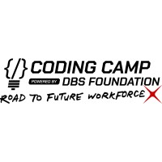
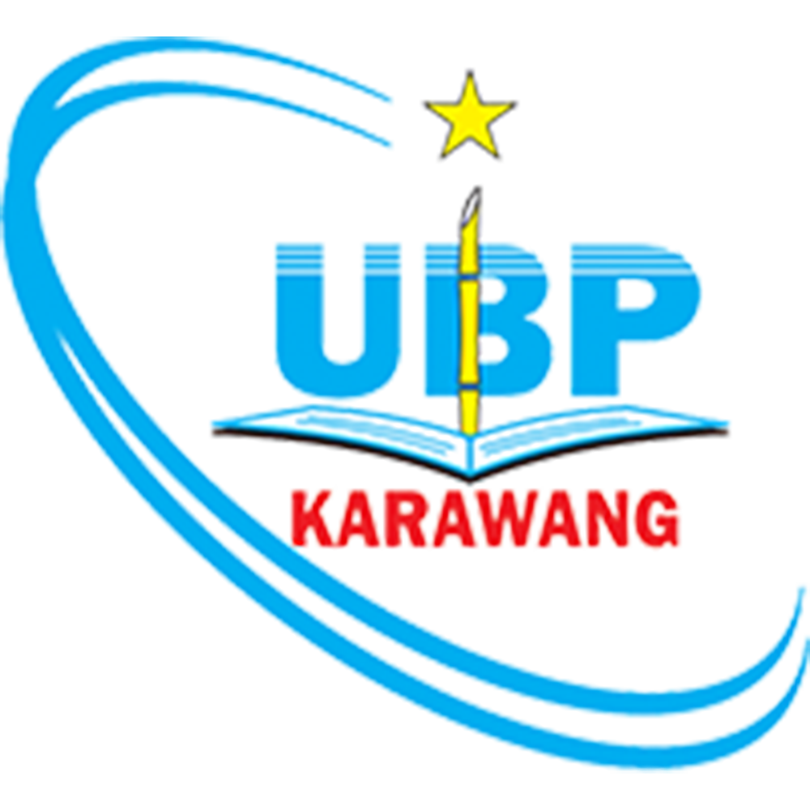
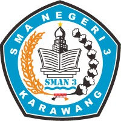
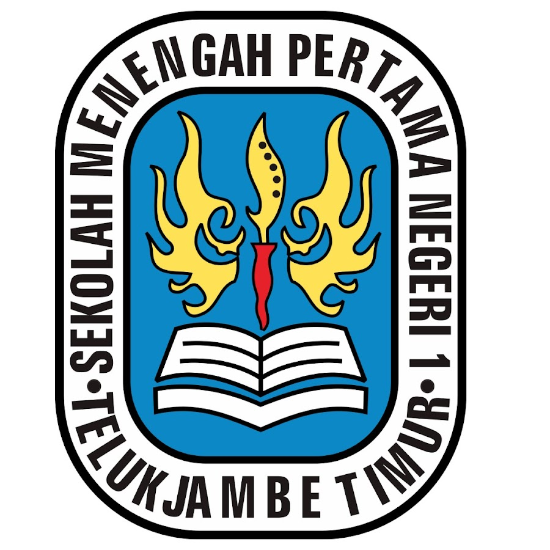
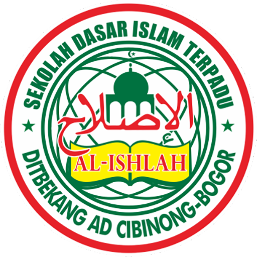
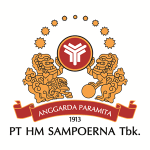
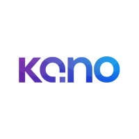
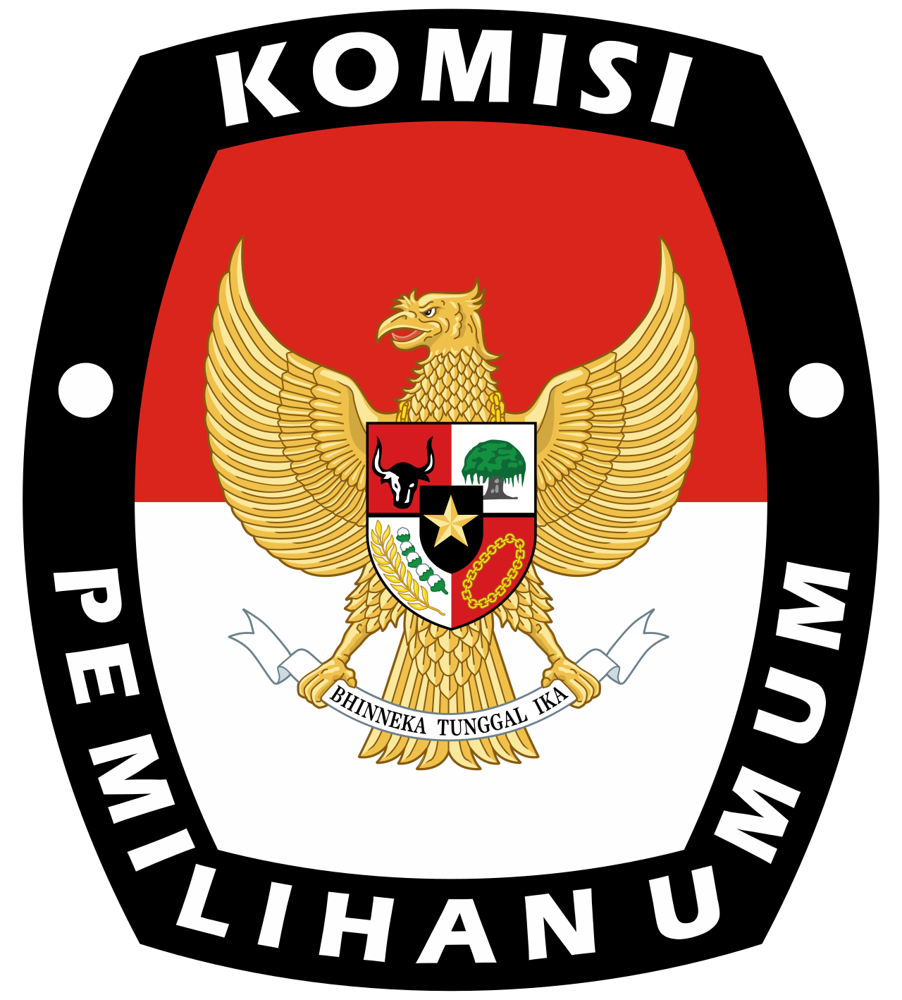

Hello, I'm
Rigger Damaiarta Tejayanda
Lulusan S1 Teknik Informatika (Cumlaude) dengan IPK 3,80 dan pengalaman profesional pada fungsi IT Support, Administrasi Operasional, Customer Service, Analisis Data, serta Pengembangan Sistem.
Memiliki pengalaman dalam pengelolaan data, pelaporan operasional, troubleshooting aplikasi, dukungan pengguna, koordinasi proyek, dan perbaikan proses bisnis pada lingkungan manufaktur maupun pendidikan.
Menguasai Microsoft Excel, SQL, Python, Power BI, Google Looker Studio, serta berbagai tools produktivitas dan analisis bisnis.
Memiliki kemampuan komunikasi, problem solving, dan koordinasi yang baik serta terbiasa bekerja dengan target dan data dalam mendukung pengambilan keputusan.
Terbuka untuk peluang karier di bidang Management Trainee/ODP, Data Analyst, Business Analyst, PPIC, Supply Chain & Logistics, Warehouse Administration, Banking Operations, Project Coordination, IT Support, dan fungsi operasional strategis lainnya
Hard Skills
Tools
Soft Skills
Bahasa
Pendidikan

Dicoding Indonesia
Coding Camp powered by DBS Foundation - Data Scientist
Februari 2026 - Juni 2026 | Final Grade Average 93.50- Meraih 5 sertifikasi kompetensi teknis dari Dicoding Indonesia (mencakup dasar Data Science, SQL, Python, Machine Learning, dan Literasi Finansial) untuk memperkuat fondasi analitik data.
- Mengembangkan proyek akhir (capstone project) berbasis Machine Learning secara end-to-end yang berfokus pada penyelesaian masalah dan pengambilan keputusan bisnis di dunia nyata.

Universitas Buana Perjuangan Karawang
S1 Teknik Informatika - Fakultas Ilmu Komputer
September 2021 - Mei 2025 | IPK 3.80- Meraih predikat kelulusan Cumlaude serta terpilih sebagai penerima Beasiswa Karawang Cerdas 2024 atas keunggulan dan konsistensi prestasi akademik.
- Mengembangkan kapasitas kepemimpinan dan keterampilan teknis melalui partisipasi aktif pada 10+ acara kampus, mencakup kompetisi akademik, webinar, dan lokakarya pelatihan.

SMA Negeri 3 Karawang
Matematika dan Ilmu Pengetahuan Alam
Juli 2018 - Mei 2021 | Final Grade Average 85.47- Meraih Beasiswa Karawang Cerdas selama 3 tahun berturut-turut sebagai bentuk konsistensi dalam prestasi akademik sejak awal hingga akhir masa studi.
- Aktif dalam organisasi sekolah sebagai anggota MPK Komisi Bidang 2 (Kedisiplinan) serta Ketua Angkatan Paskibra, dengan fokus pada penguatan kepemimpinan dan kedisiplinan.

SMP Negeri 1 Telukjambe Timur
Sekolah Menengah Pertama Negeri
Juli 2015 - Mei 2018 | Final Grade Average 86.00
SD Islam Terpadu Al-Ishlah
Sekolah Dasar Islam Terpadu
Juli 2009 - Juni 2015 | Final Grade Average 85.40Sertifikasi Profesional
Data Science & Analytics
-
Belajar Fundamental Pemrosesan Data Juni 2026 | Dicoding Indonesia
-
Belajar Penerapan Data Science dengan Microsoft Fabric Juni 2026 | Dicoding Indonesia
-
Belajar Dasar Data Science Maret 2026 | Dicoding Indonesia
-
Belajar Penerapan Data Science Maret 2026 | Dicoding Indonesia
-
Belajar Matematika untuk Data Science Februari 2026 | Dicoding Indonesia
-
Belajar Fundamental Analisis Data Februari 2026 | Dicoding Indonesia
-
Belajar Dasar Data Science Januari 2026 | Dicoding Indonesia
Machine Learning & AI
-
Membangun Aplikasi Gen AI dengan Microsoft Azure Juni 2026 | Dicoding Indonesia
-
Belajar Machine Learning untuk Pemula Maret 2026 | Dicoding Indonesia
-
Belajar Machine Learning untuk Pemula Januari 2026 | Dicoding Indonesia
-
Belajar Penggunaan Generative AI Juli 2025 | Dicoding Indonesia
-
AI Praktis untuk Produktivitas Juli 2025 | Dicoding Indonesia
Microsoft Excel
-
Getting Started with Microsoft Excel April 2026 | Coursera
-
Conditional If-Else in Microsoft Excel April 2026 | MySkill
-
Agregate Data in Microsoft Excel April 2026 | MySkill
-
Data Formatting in Microsoft Excel April 2026 | MySkill
-
Data Cleansing, Sort, & Filter in Microsoft Excel April 2026 | MySkill
-
Basic Formula in Microsoft Excel April 2026 | MySkill
-
Worksheet and Workbook in Microsoft Excel April 2026 | MySkill
-
Microsoft Excel Features Maret 2026 | MySkill
-
Exploring Microsoft Excel Home Tab Maret 2026 | MySkill
Programming & SQL
-
Memulai Pemrograman dengan Python Maret 2026 | Dicoding Indonesia
-
Belajar Dasar Structured Query Language (SQL) Maret 2026 | Dicoding Indonesia
-
Memulai Pemrograman dengan Python Januari 2026 | Dicoding Indonesia
-
Belajar Dasar Structured Query Language (SQL) Januari 2026 | Dicoding Indonesia
-
Junior Web Developer Juni 2023 | BPPTIK KOMINFO
Pengalaman Kerja


IT Support Fulltime
PT HM Sampoerna Tbk (Outsourcing PT Kano Teknologi), Karawang
Agustus 2025 - Februari 2026- Menggunakan SQL Query di SSMS untuk memeriksa 5+ anomali data produksi per minggu, guna memastikan keakuratan data pada sistem manufaktur mencapai 99%.
- Menjalankan audit Health Check rutin pada 20+ Database guna mendeteksi dini isu performa dan kapasitas, yang berkontribusi pada penurunan potensi downtime sistem operasional sebesar 30%.
- Memastikan kelancaran operasional aplikasi iMEL yang mengelola alur produksi dari bahan baku hingga produk jadi, dengan membantu menyelesaikan kendala teknis bagi 10+ operator secara harian.
- Secara proaktif menyusun 10+ dokumen teknis mendalam terkait penanganan insiden yang dapat diakses oleh tim lokal maupun global untuk mempercepat penyelesaian masalah serupa hingga 40%.
Customer ServiceInternship
Universitas Buana Perjuangan, Karawang
September 2024 - Juni 2025- Melayani dan menyelesaikan 10+ keluhan teknis mahasiswa setiap hari dengan rata-rata waktu respons di bawah 15 menit untuk meminimalisir gangguan belajar.
- Menyusun laporan rekapitulasi data aktivitas perkuliahan berisi 1000+ baris data dari sistem ke Microsoft Excel sebagai bahan evaluasi kinerja akademik dosen dalam satu semester.
Asisten Dosen Analisis Desain Berorientasi Objek Part-time
Universitas Buana Perjuangan, Karawang
September 2024 - Januari 2025- Membimbing 400+ mahasiswa dalam menyusun laporan teknis yang standar, mencakup perancangan alur bisnis dan struktur database menggunakan diagram visual UML dan ERD.
- Berkolaborasi dengan dosen dalam merancang 3+ studi kasus yang relevan guna meningkatkan pemahaman analitis dan praktis mahasiswa hingga 40% dalam memecahkan masalah sistem.
- Memimpin 10+ sesi perkuliahan (teori dan praktikum) secara mandiri untuk memastikan kelancaran proses belajar mengajar saat dosen berhalangan.
Staff ITInternship
Universitas Buana Perjuangan, Karawang
September 2023 - September 2024- Mengembangkan, monitoring, dan melakukan maintenance pada 10+ aplikasi yang digunakan di Universitas yang diakses oleh 1.000+ pengguna aktif (mahasiswa & dosen).
- Meningkatkan efektivitas dan produktivitas performa layanan operasional aplikasi sebesar 70% dengan memangkas waktu pemrosesan administrasi manual dari 3 hari menjadi 1 hari.

IT Support Seasonal
Komisi Pemilihan Umum Daerah, Karawang
Mei - Juni 2024- Mengelola kesiapan infrastruktur IT di fasilitas Universitas Buana Perjuangan (UBP) Karawang guna mendukung kelancaran ujian Computer Assisted Test (CAT) bagi 100+ calon Panitia Pemilihan Kecamatan (PPK) Pilkada 2024.
- Memberikan dukungan teknis dan melakukan troubleshooting pada 40+ unit PC selama tes 3 sesi berlangsung dengan tingkat keberhasilan penanganan masalah 100% tanpa menunda jadwal tes.
Asisten Laboratorium Pemrograman Dasar Part-time
Universitas Buana Perjuangan, Karawang
Februari - Juni 2024- Memberikan dampak pada tingkat kelulusan mata kuliah >90% bagi 400+ mahasiswa melalui bimbingan praktikum Python (struktur data & algoritma) sebagai pengenalan dasar Data Science.
- Memeriksa 500+ baris code per minggu untuk membantu mahasiswa mengidentifikasi kesalahan sintaks dan logika program.
- Memastikan kesiapan infrastruktur laboratorium dengan memberikan dukungan teknis pada 30+ unit komputer terkait masalah konektivitas dan software.
Asisten Laboratorium Analisis Desain Berorientasi Objek Part-time
Universitas Buana Perjuangan, Karawang
September 2023 - Januari 2024- Membimbing praktikum Analisis Desain Berorientasi Objek pada 400+ Mahasiswa dalam menyelesaikan 5+ bab pada modul praktikum perancangan alur bisnis menggunakan UML.
- Menerapkan kemampuan analisis dan debugging untuk mengurangi tingkat kesalahan pengerjaan tugas mahasiswa hingga 50%.
- Memastikan kesiapan infrastruktur laboratorium dengan memberikan dukungan teknis pada 30+ unit komputer terkait masalah konektivitas dan software.
Pengalaman Proyek
Data Pipeline ETL untuk Monitoring Produk Kompetitor Fashion
Data Engineer | 2026- Mengembangkan ETL Pipeline modular menggunakan Python untuk mengekstraksi 1.000 data produk dari website kompetitor melalui web scraping sebagai data mentah analisis bisnis.
- Melakukan proses transformasi data dengan menghapus data invalid, duplikat, dan missing value, mengonversi harga USD ke Rupiah, serta melakukan standardisasi tipe data sehingga menghasilkan dataset berkualitas tinggi.
- Mengotomatisasi proses penyimpanan data ke CSV dan Google Sheets, serta menerapkan error handling dan unit testing (Pytest) guna meningkatkan reliabilitas dan maintainability pipeline.
Analisis Pola Transaksi dan Deteksi Segmen Nasabah
Data Scientist | 2026- Menganalisis 2.500+ data log transaksi perbankan dan memetakan populasi nasabah ke dalam dua profil utama (Saver dan Spender) menggunakan model K-Means Clustering dengan Silhouette Score 0.57.
- Membangun sistem deteksi segmen otomatis melalui hyperparameter tuning pada model Random Forest Classifier, menghasilkan performa prediktif yang stabil.
- Memberikan rekomendasi bisnis untuk otomasi segmentasi dengan menargetkan promosi Kredit pada segmen konsumtif dan deposito pada segmen konservatif guna hasil Return On Investment (ROI) efisien.
Analisis Prediksi Keputusan Mahasiswa Dropout
Data Scientist | 2026- Menganalisis 4.000+ data historis mahasiswa untuk mengidentifikasi akar masalah keputusan dropout, dan menemukan korelasi kuat pada tunggakan finansial, status berhutang, serta kerentanan demografi.
- Membangun model Random Forest dengan optimasi SMOTE yang mencapai akurasi 75%, dan men-deploy sistem peringatan dini berbasis Streamlit untuk memprediksi dropout secara individu atau massal.
- Menyediakan Business Dashboard dengan Google Looker Studio untuk monitoring bagi dosen wali agar dapat melakukan intervensi proaktif sedini mungkin, seperti program konseling atau relaksasi cicilan SPP.
Analisis Prediksi Keputusan Resign Karyawan
Data Scientist | 2026- Mengidentifikasi pola utama pemicu resign karyawan, seperti kompensasi bulanan dan usia, serta menerapkan teknik SMOTE untuk menangani ketidakseimbangan data.
- Membangun model klasifikasi Random Forest dengan akurasi 85% lalu men-deploy Business Dashboard, lalu membuat sistem peringatan dini untuk memantau probabilitas resign 500+ karyawan secara real-time.
- Membuat langkah Rekomendasi berbasis data untuk tim HR guna menurunkan attrition rate karyawan hingga 15-20% dengan fokus pada peninjauan ulang kompensasi, manajemen batas lembur, dan program retensi talenta muda.
Analisis Performa Penjualan & Perilaku Pelanggan E-Commerce
Data Scientist | 2026- Menganalisis dataset transaksi e-commerce berskala besar (96.000+ data) menggunakan Python untuk mengetahui 5+ insight strategis guna mengevaluasi kesehatan bisnis dan pola pertumbuhan perusahaan.
- Menemukan pola musiman pada pendapatan perusahaan, termasuk lonjakan signifikan pada periode Black Friday, sebagai referensi strategis perencanaan kampanye pemasaran mendatang.
- Memetakan distribusi pelanggan secara geografis dan merekomendasikan fokus efisiensi logistik pada wilayah dengan kepadatan transaksi tertinggi guna menurunkan biaya logistik operasional hingga 10-15%.
Analisis Sentimen Publik terhadap Penghargaan Ballon d'Or 2024
Machine Learning | 2025- Melakukan pemrosesan data tekstual dari 1.000+ komentar Instagram untuk menganalisis sentimen opini publik terkait kontroversi penghargaan Ballon d'Or 2024.
- Menguji 4 model Machine Learning (SVM, Decision Tree, Logistic Regression, Random Forest) dengan mencapai tingkat akurasi model di atas 80%, bertujuan untuk memprediksi opini publik secara presisi sebagai insight evaluasi kepuasan dan transparansi penghargaan.
Sistem Manajemen Kerja Praktik UBP Karawang
Web Developer | 2025- Membangun aplikasi web dengan framework Laravel yang dapat membantu 500+ mahasiswa untuk mendigitalisasi administrasi kerja praktik, dari pendaftaran hingga penjadwalan sidang secara otomatis.
- Mengubah alur pemberkasan manual menjadi digital terintegrasi, mempercepat efisiensi waktu validasi dokumen hingga 60% dan meningkatkan keamanan data mahasiswa.
Program Pengabdian Implementasi AI Canva sebagai Media Pembelajaran Inovatif
AI Trainer | 2024- Memimpin pelatihan pemanfaatan fitur Generative AI pada platform Canva (seperti Magic Write dan Text-to-Image) kepada 20+ guru untuk merancang materi ajar visual yang interaktif secara instan.
- Meningkatkan kompetensi literasi digital tenaga pengajar dalam mengadopsi teknologi kecerdasan buatan, sehingga waktu pembuatan media pembelajaran menjadi 50% lebih cepat.
- Publikasi: Jurnal Pengabdian Canva AI
Deteksi dan Pengenalan Karakter Plat Nomor kendaraan
Data Scientist | 2024- Mengembangkan sistem identifikasi kendaraan otomatis menggunakan OpenCV dengan tingkat akurasi deteksi bounding box di atas 85% untuk mendeteksi dan mengisolasi area plat nomor dari citra mobil.
- Mengintegrasikan Tesseract OCR dan teknik segmentasi citra untuk mengubah gambar menjadi teks dalam waktu kurang dari 2 detik per citra, bertujuan untuk pencatatan sistem parkir pintar atau e-tilang.
Sistem Pengiklanan Web UMKM (GEMURAI)
Project Manager | 2024- Memimpin tim pengembangan platform web GEMURAI dalam siklus sprint 2 mingguan (framework Agile Scrum) untuk mendigitalisasi pemasaran dan pengelolaan data UMKM.
- Merancang Entity Relationship Diagram (ERD) dan UI/UX antarmuka sistem guna menargetkan potensi perluasan jangkauan promosi bagi 50+ pelaku UMKM lokal.
Analisis Prediksi Keterlambatan Kelulusan Mahasiswa
Data Scientist | 2024- Melakukan pemrosesan data dari dataset akademik yang mencakup 250.000+ data transkrip nilai dan 4.500 data lulusan untuk dianalisis dan menghasilkan 3 temuan utama.
- Menganalisis korelasi 5+ fitur kritis terhadap durasi studi (status pekerjaan, usia, jenis kelamin, Program Studi, dan tren IP) untuk mengidentifikasi faktor risiko utama keterlambatan lulus.
Klasifikasi Tingkat Penyakit Obesitas Pada Populasi Dewasa
Data Scientist Researcher | 2024- Menerapkan teknik pemrosesan melalui penanganan missing value dan duplikat untuk membangun model klasifikasi risiko obesitas dengan tingkat prediksi mencapai 90% menggunakan AdaBoost dan XGBoost.
- Menganalisis interpretabilitas model untuk mengungkap bahwa Berat Badan dan Usia memiliki kontribusi tertinggi terhadap klasifikasi risiko, memberikan pemahaman pola kesehatan yang lebih konkret bagi pengambilan keputusan medis.
- Publikasi: Jurnal klasifikasi obesitas
Analisis Sentimen Publik terhadap Mobil Listrik
Machine Learning Researcher | 2024- Melakukan pemrosesan data tekstual dari 2.000+ ulasan opini publik di TikTok yang dimulai dari crawling, preprocessing komprehensif (cleaning, stemming, tokenization), hingga pembobotan kata dengan TF-IDF.
- Membandingkan kinerja 6 algoritma Machine Learning (Naïve Bayes, SVM, KNN, Decision Tree, Random Forest, Logistic Regression) dan menentukan model terbaik yang mencapai akurasi hingga 88% untuk menghasilkan insight mengenai preferensi dan menjawab kekhawatiran konsumen pada kendaraan listrik.
- Publikasi: Jurnal sentimen analisis
Model Deteksi Wajah untuk Sistem Kehadiran Sekolah
Data Scientist | 2023- Membangun model Deep Learning menggunakan Convolutional Neural Network (CNN) melalui optimasi layer (Conv2D, MaxPooling, Dropout) untuk mengenali wajah dalam waktu kurang dari 1 detik per frame.
- Menerapkan otomasi pencatatan presensi digital berbasis Computer Vision dari tangkapan kamera langsung ke dalam format Excel untuk meminimalisir manipulasi data kehadiran hingga 99%.
Sistem Penjadwalan Kegiatan UBP Karawang
Web Developer | 2023- Mengembangkan sistem sentralisasi penjadwalan kegiatan berbasis web yang kini digunakan oleh 50+ pegawai dan berhasil menekan insiden konflik jadwal hingga 90%.
- Mengembangkan fitur Kalender Digital, membuat transparansi informasi dan sinkronisasi jadwal real-time.
Klasifikasi Citra Koin Romawi Kuno
Data Scientist | 2023- Membangun model Support Vector Machine (SVM) untuk mendeteksi material koin dengan menerapkan 3 teknik Pengolahan Citra Digital (PCD) yang meliputi Canny Edge, Gaussian Blur, dan ekstraksi HSV.
- Menyediakan solusi pengenalan gambar yang efisien untuk membantu para peneliti dalam mengelompokkan artefak bersejarah.
Aplikasi Mobile Jasa Titip (Take It)
Backend Developer | 2023- Mengembangkan arsitektur backend dan RESTful API dengan mengintegrasikan 10+ endpoint secara stabil dan aman untuk manajemen basis data aplikasi mobile.
- Menerapkan metodologi Extreme Programming (XP) yang berhasil mempercepat siklus pengembangan fitur sebesar 30%, menciptakan platform transaksi yang terpercaya.
Perancangan Inovasi Sistem Pengolahan Limbah Terintegrasi (STAMPASTIK)
Lead Researcher | 2023- Memimpin tim riset yang terdiri dari 5 anggota dalam merancang program Stasiun Pemanfaatan Sampah Plastik (STAMPASTIK), sebuah inovasi konversi limbah plastik menjadi bahan bakar alternatif melalui metode Pirolisis.
- Menyusun peta jalan (roadmap) implementasi sistem yang berpotensi mereduksi volume limbah plastik area target hingga 40% sebagai rekomendasi strategis bagi pemerintah daerah.
Sistem Informasi E-Commerce Produk Digital (Tokoku)
Web Developer | 2022- Membangun aplikasi e-commerce produk digital dengan struktur kode Object-Oriented Programming (OOP) untuk menciptakan platform transaksi top-up yang mampu memproses pesanan pengguna dalam hitungan detik.
- Mengintegrasikan algoritma Sequential Search untuk fitur pencarian pesanan, manajemen produk, serta riwayat transaksi pengguna untuk mengoptimalkan sistem pencarian menjadi 30% lebih cepat.
Sistem Manajemen Pemesanan Travel
Python Developer | 2022- Membangun aplikasi Command Line Interface (CLI) berbasis Python untuk sentralisasi pendataan peserta dengan kapasitas pemrosesan hingga 100+ kuota, pilihan paket, dan fasilitas travel.
- Mengotomatisasi kalkulasi tarif pembayaran guna mempercepat proses registrasi hingga 70%.
Pengalaman Kepemimpinan
CTO Divisi Design Engineering
BPROTIK UBP | September 2023 - Februari 2025- Memimpin dan mengembangkan 15+ anggota melalui mentoring intensif di bidang UI/UX dan System Design, mendorong peningkatan kompetensi hingga 80% berdasarkan evaluasi internal dan kualitas hasil proyek.
- Mengembangkan program pembelajaran terstruktur dengan menyusun kurikulum, bahan ajar, serta materi desain sistem (Figma & UML) untuk mendukung proses pembelajaran yang lebih sistematis dan terarah.
Komisi Bidang 2 Kedisiplinan
MPK SMAN 3 | September 2019 - September 2020- Bertanggung jawab dalam mengawasi, mengevaluasi, dan menegakkan tata tertib bagi 1.000+ siswa di lingkungan sekolah.
- Melakukan inspeksi atau razia kedisiplinan secara berkala sebanyak 2-4 kali per bulan dan mengelola pencatatan pelanggaran, berkontribusi pada penurunan tingkat pelanggaran siswa hingga 30%.
- Berkolaborasi lintas fungsi dengan pihak Kesiswaan (guru) dan OSIS dalam menyelenggarakan 3+ program sosialisasi aturan dan mengevaluasi tingkat kedisiplinan secara komprehensif.
Ketua Angkatan Paskibra
SMAN 3 Karawang | Juni 2018 - Juni 2020- Memimpin dan bertanggung jawab penuh atas satu angkatan yang terdiri dari 30+ anggota, serta memastikan kedisiplinan dan tingkat kehadiran di setiap kegiatan mencapai lebih dari 95%.
- Memimpin pelaksanaan 10+ program kerja internal angkatan per tahun, yang mencakup kegiatan kaderisasi, latihan rutin, dan evaluasi anggota.
- Menjadi koordinator utama dan negosiator yang menjembatani komunikasi antara anggota angkatan dengan pelatih dan pengurus senior untuk memastikan kelancaran operasional organisasi.